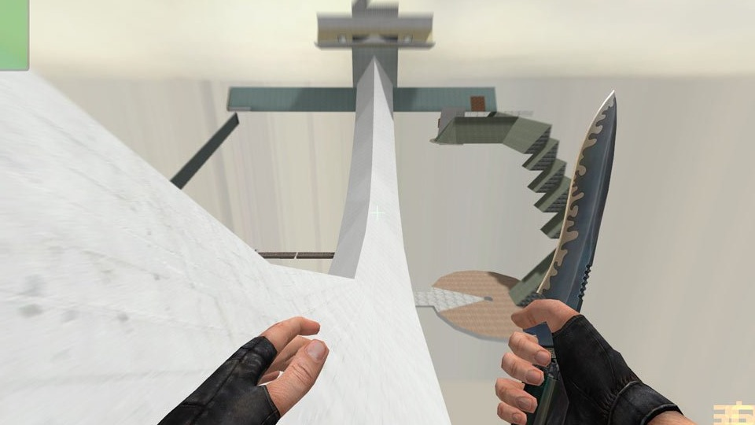

Projetos
Animações
Scratch é um construtor de animações de jogos.
Basta juntar elementos do aplicativo em seu projeto e
ver a magica acontecer.

Programação
Códigos HTML/CSS
Por conta do scratch ser um programador visual, você não precisa saber a fundo sobre programação para criar jogos.
Basta utilizar sua lógica.

Jogo
Surf CS
Um modo de jogo bastante conhecido na comunidade do Counter Strike também foi produzido no scratch.
Não é original mas da para
o gasto.